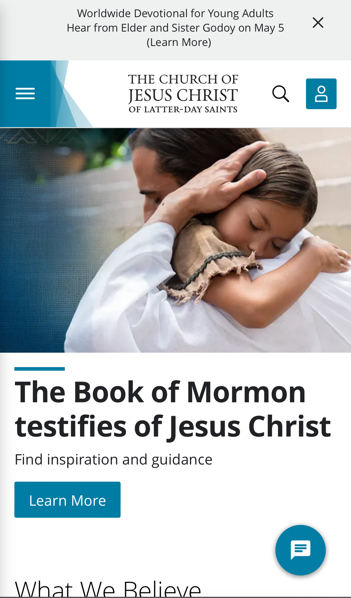

Alignment
BYU-Idaho
my.byui.eduThis webpage exemplifies the principle of alignment because its elements are arranged in an organized and consistent manner. Each widget is aligned both horizontally and vertically with the other widgets. The text corresponding with each one is also center aligned, indicating that they are related in some way. The structure of the pieces on the page gives them a clear visual connection.
Contrast
W3Schools
w3schools.comThis webpage is a great example of contrast because it has light-colored text against a dark background. The utilization of this design principle helps to increase the visibility of the content on the page and improves the visual appeal. Additionally, the simplicity of the page further aids with its contrast as it puts an emphasis on the most important aspects.
Rule of Thirds
Church of Jesus Christ of Latter Day Saints
churchofjesuschrist.org This church webpage is an example of the rule of thirds because of the main image on the page. The focus is on the child's face which is positioned at the intersection of the (imaginary) grid lines, following the rule of thirds principle. The surrounding elements are also carefully arranged to further complement and emphasize the main subject. This gives the design a balanced and visually appealing composition.